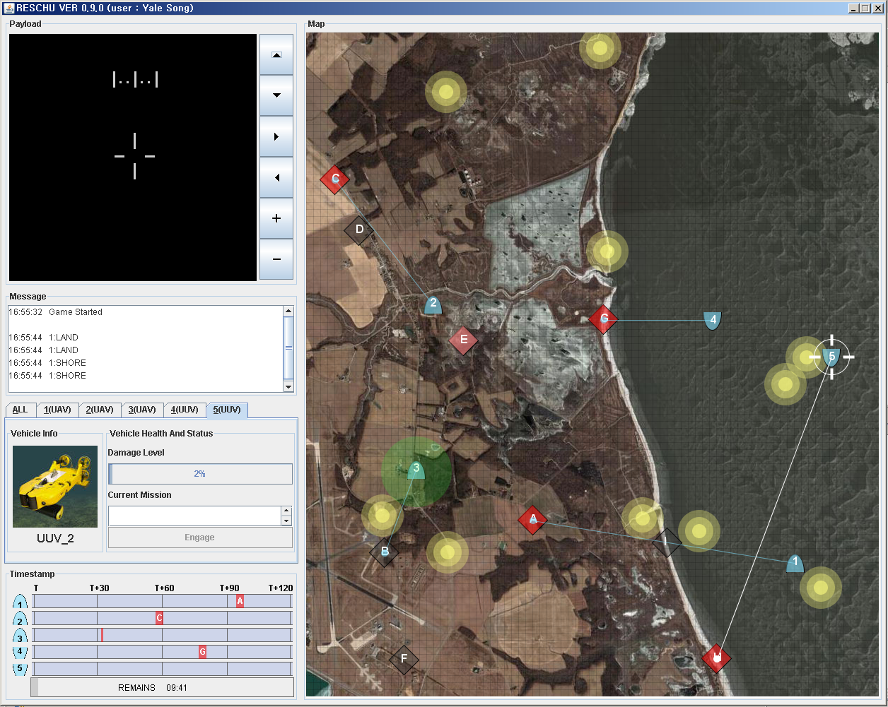
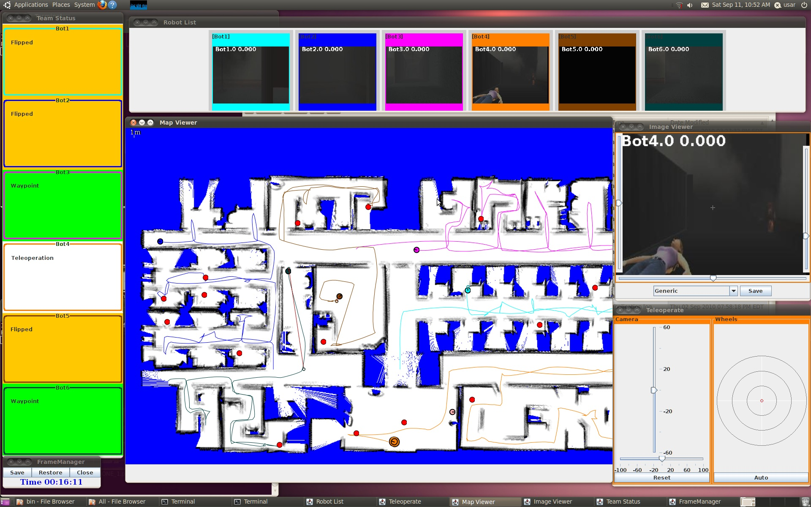
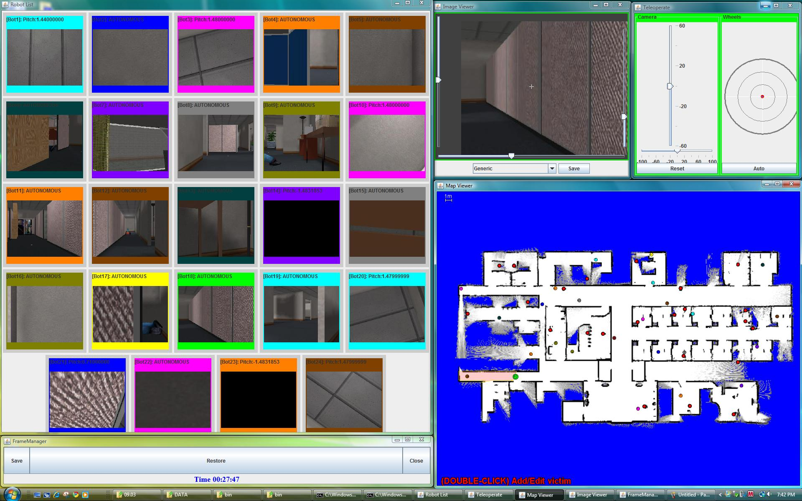

Research Projects
The influence of Cultural Factors on Trust in Automation
Goal:examining how cultural factors affect various aspects of trust attitude and resulting reliance on automated systems
- Implementing an air traffic control system and manipulating the contextual variables to simulate unreliable
automation and examine the cultural effects on trust in automation
- Developing a cross-cultural questionnaire through Amazon crowdsourcing systems and conducting theoretically
guided experimental studies in in the U.S., Taiwan, Turkey
*Best paper award recognition, related papers: C16-C22 & J5-J7

Task Switching in Human Multi-agent Interaction
under Unreliable Automation
Goal: scheduling human attention in spite of imperfect automation in multi-task environments
- Applying a Hidden Markov Model to characterize human multi-robot interactions and to investigate
human decision making processes and unobserved cognitive intentions
- Designing various mechanisms to examine the effects of operator attention allocation and resulting decisions in multitasking situations
*Best paper award recognition, related papers: C10-C15 & J4

Coordination of Human Multi-agent Teams
in Dynamic Environments
Goal: investigating the interaction between automation and organization of human teams in controlling large robot teams
- Examining coordinated interaction of human teams with individual and shared control of multi-robot teams under different system scalability and task complexity
- Mining streaming video data to present the operator most relevant spatial and temporal information by reducing image redundancy
Related Papers: C1-C9 & J1-J3